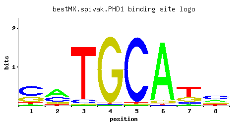

PHD1
YKL043W
Transcriptional activator that enhances pseudohyphal growth; regulates expression of FLO11, an adhesin required for pseudohyphal filament formation; similar to StuA, an A. nidulans developmental regulator; potential Cdc28p substrate
Best-performing DNA-binding model.

View and copy the recommended matrices ↘
A | 0.065 0.490 0.010 0.010 0.010 0.935 0.045 0.260 C | 0.563 0.330 0.070 0.010 0.965 0.010 0.125 0.470 G | 0.291 0.125 0.010 0.970 0.010 0.045 0.280 0.170 T | 0.080 0.055 0.910 0.010 0.015 0.010 0.550 0.100
A | 6 49 1 1 1 93 4 26 C | 56 33 7 1 96 1 12 47 G | 29 12 1 97 1 4 28 17 T | 8 5 91 1 1 1 55 10
A | -1.59 0.43 -3.47 -3.47 -3.47 1.07 -1.96 -0.21 C | 1.14 0.61 -0.94 -2.89 1.68 -2.89 -0.36 0.96 G | 0.48 -0.36 -2.89 1.68 -2.89 -1.39 0.44 -0.06 T | -1.39 -1.76 1.05 -3.47 -3.06 -3.47 0.54 -1.16
Alternative candidate matrices 8
Historical matrix candidates from the original ScerTF database. Expand a source to inspect its original logo, scores, and matrix values.
PHD1Badis et. al.P = 2.44e-17View matrix ↘
PHD1_AFoat et. al.P = 1View matrix ↘
PHD1_BFoat et. al.P = 0.2826View matrix ↘
PHD1_CFoat et. al.P = 1.20e-15View matrix ↘
PHD1Harbison et. al.P = 5.66e-20View matrix ↘
PHD1Macisaac et. alP = 3.89e-18View matrix ↘
PHD1Zhu et. al.P = 0.0003297View matrix ↘
PHD1Zhao and StormoP = 5.75e-21View matrix ↘
Gene-level annotations and interactions.
Genes bound in ChIP-chip experiments 166 genes
YAL002W, YAL063C, YAL064W, YAR050W, YBL025W, YBL029W, YBL030C, YBL069W, YBL071C, YBR069C, YBR080C, YBR157C, YBR158W, YBR159W, YBR162C, YBR162W-A, YCL024W, YCL025C, YCL045C, YCR064C, YCR065W, YCR098C, YCR099C, YCR100C, YDL016C, YDL034W, YDL036C, YDL037C, YDL047W, YDL092W, YDL094C, YDL095W, YDL097C, YDL214C, YDL245C, YDR010C, YDR011W, YDR210W-D, YDR261C, YDR309C, YDR343C, YDR441C, YDR442W, YDR451C, YDR452W, YDR513W, YEL007W, YEL038W, YEL039C, YEL040W, YEL066W, YEL068C, YEL069C, YEL070W, YEL073C, YEL074W, YEL075C, YEL076C, YEL076C-A, YEL076W-C, YEL077C, YER033C, YER034W, YER045C, YER145C, YER146W, YFL026W, YFL027C, YFL062W, YGL156W, YGR140W, YGR200C, YGR249W, YGR251W, YGR279C, YHL024W, YHL028W, YHL029C, YHL039W, YHL040C, YHR005C, YHR136C, YHR137W, YHR170W, YHR213W, YIL010W, YIL012W, YIL013C, YIL099W, YIL118W, YIL120W, YIL132C, YIL170W, YIL171W, YIL172C, YIL173W, YIL174W, YIL175W, YIR020C, YJL076W, YJL077C, YJL079C, YJL105W, YJL138C, YJL217W, YJL218W, YJL219W, YJL221C, YJR094C, YJR095W, YJR127C, YJR158W, YJR159W, YKL058W, YKL059C, YKL062W, YKL063C, YKL108W, YKL109W, YKL110C, YKR102W, YLL028W, YLL063C, YLR004C, YLR005W, YLR044C, YLR046C, YML115C, YML116W, YML131W, YMR004W, YMR011W, YMR015C, YMR016C, YMR017W, YMR018W, YMR019W, YMR020W, YMR135C, YMR136W, YMR137C, YMR138W, YMR195W, YMR265C, YMR266W, YNL145W, YNL178W, YNL332W, YNL335W, YOL154W, YOR107W, YOR161C, YOR179C, YOR355W, YPL024W, YPL025C, YPL081W, YPL082C, YPL177C, YPL230W, YPL265W, YPL283C, YPR013C, YPR065W, YPR202W, YPR203W
Genes affected by TF deletion 110 genes
YCR040W, YIL082W-A, YML112W, YOL047C, YGL009C, YKL043W, YGR279C, YHL047C, YIL082W, YJR053W, YKR038C, YKR042W, YKR013W, YLR279W, YMR044W, YOR226C, YDR193W, YDR221W, YFR035C, YHR143W-A, YHR116W, YOR382W, YER011W, YCR079W, YFR005C, YIR034C, YJR116W, YOR351C, YPL187W, YER026C, YHR208W, YML085C, YBR067C, YDR461W, YNL146W, YOL073C, YPR013C, YPR015C, YCL018W, YER083C, YIL015W, YML055W, YNL300W, YPL219W, YMR230W, YMR202W, YNL279W, YER154W, YJR148W, YAL012W, YAL014C, YER001W, YKL118W, YFL018C, YLR348C, YMR139W, YOL144W, YOL086C, YPL195W, YKL209C, YKL178C, YPL120W, YLR343W, YLR349W, YMR081C, YOL111C, YOL143C, YOR221C, YBL032W, YJL158C, YKL177W, YNR032W, YKR093W, YOR239W, YLR040C, YLR042C, YLR420W, YCL066W, YKR086W, YML126C, YAL022C, YKL120W, YLR041W, YOR084W, YCR097W, YFL026W, YOL126C, YOR383C, YGL089C, YOR366W, YJR004C, YKL216W, YNR044W, YNL322C, YPL163C, YLR303W, YOR247W, YEL038W, YPL011C, YLR302C, YOR246C, YOR248W, YAR031W, YGL032C, YDR104C, YOR034C, YER078C, YGR274C, YDR360W, YER073W
Genes supported by both experiments 4 genes
YEL038W, YFL026W, YGR279C, YPR013C
Predicted TF–TF partners 10 genes
DAL82, GIS1, GSM1, MSN2, MSN4, RDS1, SKN7, SUT1, USV1, YER184C